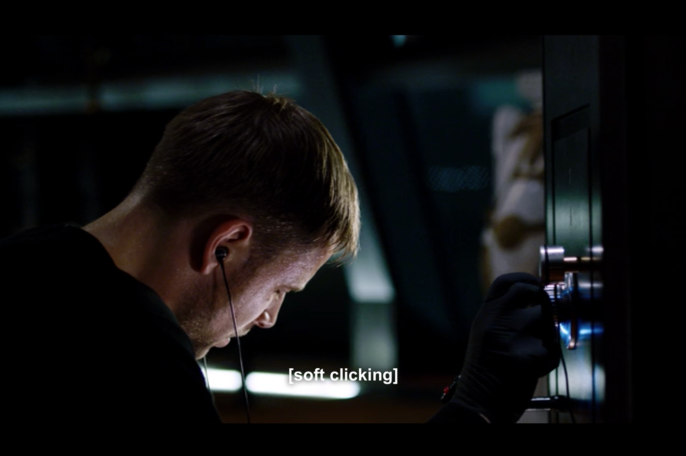
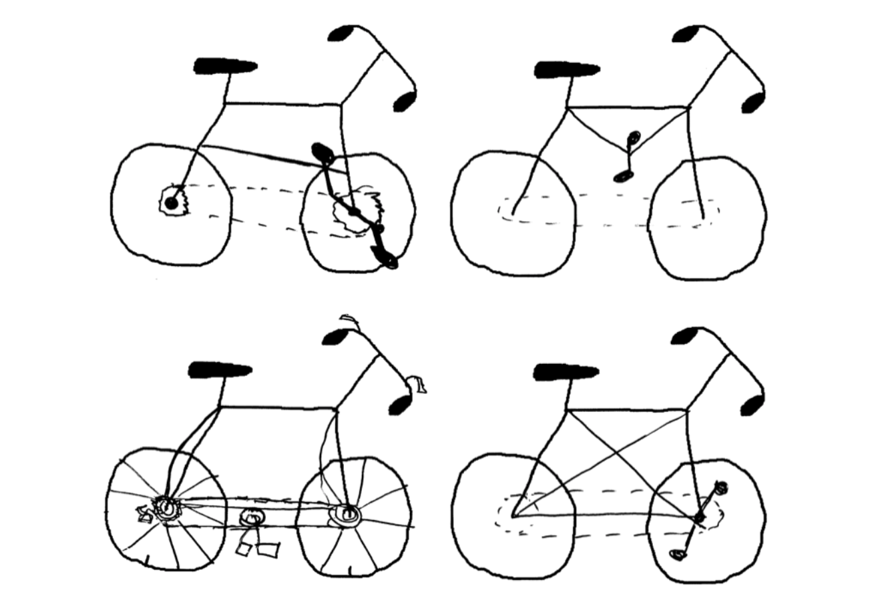

How being a developer makes me a better designer
This is a transcript of a talk originally present at MOBX conference in Berlin, 2016.
I’ve decided to name this talk "How being a developer makes me a better designer”. Some of you might be thinking: “Is this another should designers code Twitter drama thing?”—No, it’s not. This is about how being a developer makes me a better designer.
In 2009 I went to college to study Computer Science. Why? Because when I was 5 years old I wrote my first video game, using my own programming language, which was later bought by Microsoft for 100 million dollars… nah, that’s not true.
The truth is that I liked computers and I liked video games and it was apparent to me, even back then, that everything had software in it. Your microwave has software, your fridge, your TV, heck — even my skateboard has software now. Last month I stayed at a friends’ place in San Francisco and even his mattress had an app — crazy talk.
So if everything in the world is going to have software, then I want to understand software so that I can understand the world—makes sense, right?
Everyone is on their phones, on apps like Facebook all the time, yet, they have no idea what that is in reality.
So I went to study Computer Science, and, it turned out to be super boring! I was doing poorly. I was a terrible student. Just doing enough so that the university didn’t kick me out — that’s how low my bar was. On my third year however I had this course called Human Computer Interaction, where they teach you the very basics of user interface design — things like "Why is this button the shape of a rectangle with drop-shadows?” (like it used be in the past, or like it is now again(?)).
And I was like “OMG", — turns out design is not this artsy-fartsy thing that people just come up with. Design is based on logic and reason — there’s good design and bad design, and that was a break-through for me, it all just made lots of sense.
For some reason the folks at Bohemian Coding gave me a promo code to download Sketch 2, and so, during the rest of that school year I played around with it. At that same time Facebook released Facebook Home, which was this weird skin/theme for Android that we later found out was designed using Quartz Composer, so I also started playing around with that and it turned out that by the end of that year I had somehow created some kind of portfolio with unsolicited designs only.
If I saw an app that I thought was a piece of crap, me being a smartass would be like “This is crap, I’m gonna make it way better!”, and then proceeded to email the people who made it saying: “This is better, look at it!”.
I never got an answer.
But, I had a portfolio now, and so I googled “Best startups in Lisbon” — picked out 5, got a train ticket, literally knocked on their office doors and said “Hey, I’m a designer. I can help you”.
For some reason the guys at Think Orange gave me a job. I will be forever grateful to them for taking that chance on that smug college drop out kid!
We were a very small team, and even though I was hired as a designer I also had to help with some of the front-end code (we built websites, mostly) — and that meant that, sure, I was the solo designer, but most likely I was going to be the one who had to code those mockups – which also meant that I couldn’t go completely crazy with my design chops, because I would have to code it. And because I wasn’t a very good front-end developer, it forced me to be a very shy and conservative designer.
At the same time, I also started doing this thing on the side called SketchCasts. Sketch was the only thing that I knew, really, or at least the only thing that I was barely good at. For this reason, I started recording a weekly video screencast tutorial, teaching Sketch, and began charging a membership for it — people could pay $8 a month and watch a new video every week.
A year later I joined another company. We were bigger and so I joined my first design team where I learned a lot about the whole process. Things like benchmarking, user research, proper wireframming — all of that good stuff. I also got into prototyping, especially Framer, and so I teamed up with a friend of mine and built this app called Frames, which was an iOS companion app for Framer, where you could live preview, and save it offline and all.
Then, something amazing happened: my side projects were making me as much money as my day job. Therefore… I decided to quit my job. I would be consciously taking a 50% cut on my total income but at least now I could focus on my side projects full time.
And, because I had a lot of free time now, I decided to build a game—because why not?
It’s called Break this Safe, and let me tell you a quick story about this game:
The year was 2014 and Apple had just announced the Apple Watch. It was the first new product category from Apple since the iPhone and I was really into it (I know the iPad came out in 2010, but the iPad was just “a big phone” right?). I remember John Gruber saying that the Digital Crown felt amazing, and it was the most amazing feeling of any analogue controller he’d ever used. I didn’t own an Apple Watch, but I quickly became obsessed with this Digital Crown — it was a brand new input method and it sounded like it was a pretty great one.
Because I didn’t own an Apple Watch, I could only imagine this “amazing feeling” of the crown and for some reason, I always imagined it to be pretty similar to one of those safe dials, right? That’s how it should feel like, I think, and honestly, I could even make a game in where you would turn the crown, and it would turn this safe dial, like a game… right?
That could work!
It couldn’t! Turns out you couldn’t build third party apps, I didn’t know how to write apps, and I didn’t even own a watch.
The following year, 2015, Apple held the annual WWDC and announced watchOS 2, and now you could build native apps. Coincidentally, at that same WWDC week I was in London and was able to find one of 3 stores in the whole world that had Apple Watch in stock and actually sold them — so I got one.
I was also watching this show called Sense8 at the time (truly amazing and special show, it’s on Netflix, you should watch it) and on the first episode, this character called Wolfgang (the coolest name ever by the way) is trying to break into this safe, and he’s wearing headphones, trying to hear the subtle clicks of the dial, it’s all very intense, he’s sweating…
And I was like “OMG, I TOTALLY KNOW HOW THIS GAME WOULD WORK” you would have your watch, the crown is the dial, you turn the crown, you turn the dial, and you would have to listen and feel the haptic feedback on your wrist, and one of the vibrations would be stronger than the others… and that’s it, that’s the game!
So I learned how to write Swift, and I built it. watchOS 2 was still very new, and you could only do so much with it, which is great when you are just starting out — you only have this limited number of things that you can do.
So, first things first: I would have the image of a dial, turn the crown, rotate the image. Cool. Easy first step right?
Well, turns out, you couldn’t rotate images on watchOS 2.
So the only way that I could find around it was to create 100 different images and just scroll through them.

Genius.
It took me 3 months to be able to load 100 images into memory, and not have it crash. 3 months to rotate an image.
I wrote a case study on this: breakthissafe.com
During this process, I wasn’t a designer, or a developer — I was a guy building an app.
I never designed mockups for this. It was all in my head. There was no handoff to the “dev”. There wasn’t Rafa the designer and Rafa the engineer — it was just Rafa building this thing.
And then I joined Netlify.
When I joined we were just about to re-write our whole app using React, and, because I had been away from web development for a year or so, everything was new to me, including React.
Turns out, React is pretty great. It’s an interesting mental model in where everything in the UI is a component. A button is a component. A navigation bar is a component. A header is a component. A whole page can be a component.
So, if we are going to build this with components, let me design it with this mental model as well.
How does this translate to Sketch and our own design tools? Well, we use symbols and nested symbols.
Blah blah blah, Brad Frost, atomic design, blah blah… But it’s pretty spot on — I started building the tiniest of components, and then built up from that — one symbol at a time using Abstract as both our version control app and our team’s source of truth for all design work.
Thinking in components and in git committing my design work forced a mentality shift in me that I still carry out today.
This is all great, but I’m just designing mockups. These are just pretty pictures, blueprints for an idea — it’s worth nothing until we actually build it.
I can’t approach a user, send a couple of PNGs and then ask “hey, isn’t this amazing? Use it!”.
So it was time to implement this project. We started using this tool called React Storybook, and it was an amazing break-through.
Using Storybook allowed the team to design components in the vacuum, without worrying about screwing something up in the actual production app — it also forced us to design and build these components without the constraints and context of the bigger picture.
“Is this Card component actually 1200px wide because that’s the way it is, or is it just 100% the width of the parent container? What would this look without any container at all? What are the actual states that we have to take in consideration? What does it look like if the API returns… nothing?”. You get the point.
“To a client or a user, designer and developer can be just words, just like our job titles. This perspective helped us understand that in reality we are nothing but a bunch of people working together on a project”.
— “Designers and Developers”, by Paolo Tripodi
So, before I go, I want to share this thing that I found online. This group of people decided to ask this other group of people to draw a bicycle.
Before I show you the results… who here (reading this) hasn’t ridden a bike before? Who hasn’t ever seen a bicycle in real life?
(If you haven’t, you should do it, it’s amazing!)
We are all very familiar with bicycles, we don’t bat an eye at the sight of one. Some of you probably ride bikes all the time (if you’re Dutch at least), but we have no idea how they work.
It’s eye opening to see that if you truly don’t understand how something works, how can one expect to be able to draw it… or design it?
And that’s how being a developer makes me a better designer — In order for me to expect me to do a good job at designing something, I need to know how it works first, even if I can’t write all of the code (think complex backend magic), I need to understand the basics of how it works to do a good job, and I think you should too.
I want to remind everyone that at the end of the day my job isn’t drawing cool bitmaps just like your job isn’t writing JavaScript. We are all building things, we are all creating something, and each of us have something to contribute with in different ways. That’s the goal.